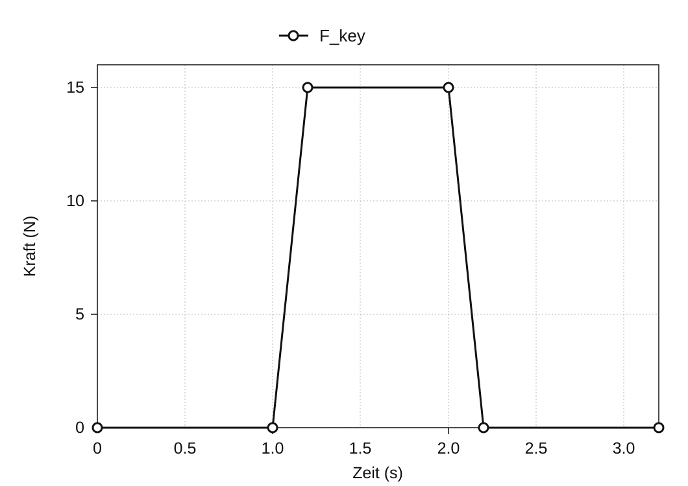
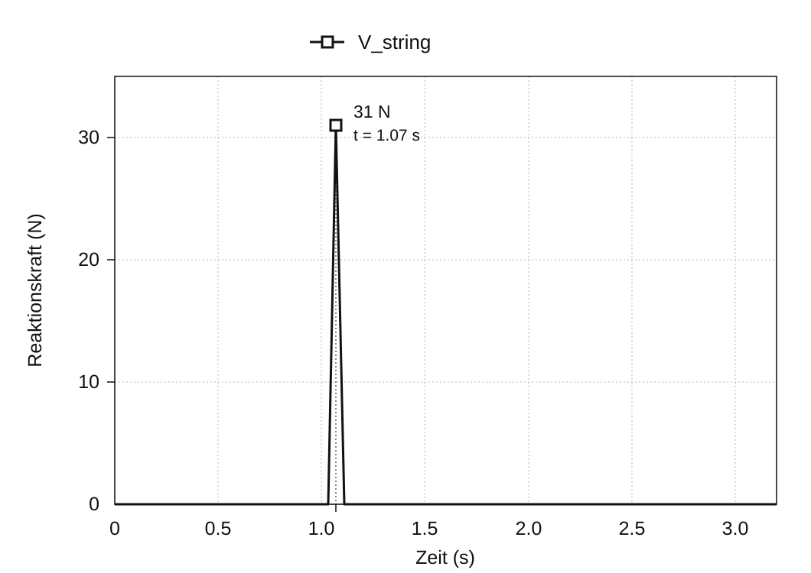

Bewegungsanalyse einer Klaviermechanik
Januar 2020
Überblick
Die Mechanik eines Flügels ist ein Hebelsystem, das einen Tastenanschlag auf einen Hammer überträgt. Dieser bewegt sich nach oben, schlägt eine Saite an und versetzt sie in Schwingung. In diesem Projekt wurde die Mechanik als 3D-Modell in SolidWorks* nachgebildet. Mithilfe einer Bewegungsanalyse wurde untersucht, wie die Betätigung der Taste in Hammergeschwindigkeit und Reaktionskraft an der Saite umgesetzt wird.
Die Mechanik wurde anhand von Referenzbildern von Grund auf modelliert und anschließend in zwei Analysen untersucht: zum Verhältnis zwischen der Abwärtsgeschwindigkeit der Taste und der Aufwärtsgeschwindigkeit des Hammers sowie zum Verhältnis zwischen der auf die Taste ausgeübten Kraft und der Reaktionskraft an der Saite. Die Simulationsergebnisse wurden mit theoretischen Werten verglichen, die aus den Abmessungen und Drehpunkten des Modells berechnet wurden, um die Übertragung von Bewegung und Kraft zu prüfen.
* SolidWorks ist ein 3D-CAD-System mit Werkzeugen für die Strukturanalyse von Bauteilen und die Bewegungsanalyse von Mechanismen.


Ein Modell der Klaviermechanik für die Analyse aufbauen
Wie ein Tastenanschlag den Hammer bewegt
Die Klaviermechanik wandelt die Abwärtsbewegung einer Taste in die Aufwärtsbewegung eines Hammers um. Beim Drücken der Taste bewegen sich Pilote, Hebeglied, Stoßzunge und Repetierschenkel gemeinsam und heben den Hammer, bis er die Saite anschlägt. Die spielende Person führt nur einen Tastenanschlag aus; im Inneren drehen sich jedoch mehrere Bauteile um unterschiedliche Drehpunkte und übertragen die Bewegung durch Kontakt.
Das 3D-Modell umfasst Taste, Hammer, Stoßzunge, Hebeglied, Repetierschenkel, Pilote, Dämpfer, Dämpferhebel und Draht sowie den tragenden Rahmen. Um die Bewegung zu modellieren, mussten für jedes Bauteil der Drehpunkt und die Kontaktstellen zu anderen Bauteilen festgelegt werden.
Das 3D-Modell aus einer Schnittzeichnung erstellen
Jedes Bauteil wurde von Grund auf in 3D modelliert, indem sein Umriss anhand einer Schnittzeichnung der Klaviermechanik nachgezeichnet wurde. Anschließend wurden die Teile mit festen Verbindungen und Drehgelenken entsprechend der realen Mechanik zusammengesetzt. Durch die Definition dieser Beziehungen entstand aus der Geometrie ein Analysemodell, das sich unter einwirkenden Kräften bewegen konnte.


Die Freiheitsgrade der Baugruppe überprüfen
Ohne den festen Rahmen enthält die Baugruppe neun bewegliche Bauteile mit insgesamt 54 ungebundenen Freiheitsgraden. Das Fixieren von Pilote und Draht an anderen Bauteilen entfernt 12 Freiheitsgrade. Drehgelenke an den übrigen sieben Bauteilen entfernen weitere 35. Damit verbleiben der CAD-Baugruppe 7 Freiheitsgrade:
54 − 12 − 35 = 7
Auch die Bindungsdiagnose von SolidWorks meldete 7 geschätzte und 7 tatsächliche Freiheitsgrade sowie 0 redundante Bindungen. Damit war bestätigt, dass die für dieses Projekt definierten Bauteile und Bindungen wie vorgesehen zusammengesetzt waren. Die Zahl der Freiheitsgrade jeder realen Klaviermechanik ist damit nicht bestimmt.

Zwei Analysen der Tastenbetätigung
Das Modell wurde in zwei getrennten Analysen untersucht. Analyse 1 verglich die Tastengeschwindigkeit mit der Hammergeschwindigkeit. Analyse 2 verglich die auf die Taste ausgeübte Kraft mit der Reaktionskraft an der Saite. Durch die Trennung dieser Eingangs- und Ausgangsgrößen ließ sich das komplexe Gestänge mithilfe geometrischer Geschwindigkeitsverhältnisse und des Hebelgesetzes leichter analysieren.
Zum Vergleich wurde die Mechanik auf rotierende Elemente vereinfacht und theoretisch untersucht. Eine Übereinstimmung von Theorie und Simulation würde darauf hinweisen, dass die Bewegung des Modells mit seinen festgelegten Abmessungen und Bindungen vereinbar ist.

Analyse 1: Von der Tasten- zur Hammergeschwindigkeit
Für die Geschwindigkeitsberechnung wurde die Mechanik auf drei starre Körper vereinfacht: die Taste, einen Zwischenmechanismus um das Hebeglied und den Hammer. Indem die Bewegung als Folge von Kontakten von ① bis ③ betrachtet wurde, ließ sich das Gestänge als drei aufeinanderfolgende Drehstufen analysieren.

Alle Punkte eines starren Körpers haben dieselbe Winkelgeschwindigkeit. Bezeichnet r den Abstand vom Drehpunkt und v die lineare Geschwindigkeit an diesem Punkt, gilt v = ωr. Unter der Annahme, dass die Geschwindigkeit an jeder Kontaktstelle verlustfrei zwischen den Körpern übertragen wird, lässt sich die Hammergeschwindigkeit berechnen: Die Verhältnisse von Ausgangs- zu Eingangsradius der drei Stufen werden miteinander und anschließend mit der Tastengeschwindigkeit multipliziert.
vhammer = (r1′ r2′ r3′ / r1 r2 r3) vkey

Eingangsbedingungen und Ergebnisse
In SolidWorks Motion Analysis wurde am Ende der Taste eine nach unten gerichtete Kraft von 5 N angesetzt. Aufgezeichnet wurden die linearen Geschwindigkeiten von Tastenende und Hammer. Unmittelbar nach Einsetzen der Kraft erreichten sie Höchstwerte von 1.027 mm/s beziehungsweise 4.284 mm/s. Daraus ergibt sich in der Simulation ein Verhältnis von Hammer- zu Tastengeschwindigkeit von etwa 4,17.

| Größe und Methode | Geschwindigkeit |
|---|---|
| Taste (Simulation) | 1.027 mm/s |
| Hammer (Theorie) | 4.614 mm/s |
| Hammer (Simulation) | 4.284 mm/s |
Vergleich mit der Theorie
Die gemessenen Radien betrugen r1 = 200 mm, r1′ = 88 mm, r2 = 53 mm, r2′ = 78 mm, r3 = 16 mm und r3′ = 111 mm. Eingesetzt ergeben diese Werte ein idealisiertes Geschwindigkeitsverhältnis von etwa 4,49. Bei einer Tastengeschwindigkeit von 1.027 mm/s beträgt die berechnete Hammergeschwindigkeit 4.614 mm/s.

Die simulierte Hammergeschwindigkeit von 4.284 mm/s lag etwa 7 % unter dem theoretischen Wert und zeigte dabei eine ähnliche Geschwindigkeitsverstärkung. Die theoretische Berechnung verwendet drei idealisierte starre Körper, während die Simulation die einzelnen Bauteile abbildet. Aus der numerischen Abweichung allein lässt sich ihre Ursache nicht ableiten.
Analyse 2: Von der Tastenkraft zur Reaktionskraft an der Saite
In der zweiten Analyse wurde auf die Tastenoberfläche eine nach unten gerichtete Kraft von 15 N aufgebracht und die Reaktionskraft an der Saite beim Aufprall aufgezeichnet. Die Tastenkraft Fkey begann bei 1,0 Sekunden anzusteigen und erreichte 15 N. Die Reaktionskraft Vstring erreichte beim Auftreffen des Hammers einen Spitzenwert von 31 N.


Zum Vergleich wurde mit den Hebelarmen auf Tasten- und Hammerseite eine vereinfachte Berechnung nach dem Hebelgesetz durchgeführt.
Vstring = (15 × 195) / 94 = 31.1 N
Mit Hebelarmen von 195 mm auf der Eingangsseite und 94 mm auf der Saitenseite ergibt die statische Vergleichsrechnung nach dem Hebelgesetz 31,1 N. Das sind 0,1 N mehr als der simulierte Spitzenwert von 31 N. Unter welchen Bedingungen diese statische Rechnung auf die kurzzeitige Kraftspitze beim Aufprall übertragbar ist, muss noch bestätigt werden.

Simulation und Theorie vergleichen
Ergebnisse der beiden Vergleiche
In Analyse 1 betrug die theoretische Hammergeschwindigkeit 4.614 mm/s, gegenüber 4.284 mm/s in der Simulation. In Analyse 2 lag der statische Vergleichswert nach dem Hebelgesetz bei 31,1 N, gegenüber einem simulierten Spitzenwert von 31 N. Beide Vergleiche zeigten eine gute Übereinstimmung zwischen dem 3D-Modell und den theoretischen Berechnungen.
Die Unterschiede einordnen
Die theoretische Berechnung reduziert die Mechanik auf drei starre Körper und nimmt an, dass Bewegung und Kraft an deren Kontaktstellen verlustfrei übertragen werden. Die Simulation bildet dagegen die einzelnen Bauteile ab. Diese unterschiedlichen Darstellungen sind für die Interpretation der Ergebnisse wichtig. Um die verbleibende Abweichung auf Energieverlust oder Materialverformung zurückzuführen, müssten jedoch die Simulationseinstellungen überprüft werden.
Fazit
Die 3D-Simulation stimmte bei Hammergeschwindigkeit und Reaktionskraft an der Saite weitgehend mit den theoretischen Vergleichswerten überein. Im Rahmen dieser Vergleiche bildete das aus einer Schnittzeichnung erstellte Modell die Übertragung von Bewegung und Kraft so ab, wie es aus der vorgegebenen Geometrie und den Bindungen zu erwarten war.
Das Projekt verband mehrere Modellierungsschritte: eine Schnittzeichnung interpretieren, Beziehungen zwischen Bauteilen in CAD-Bindungen übersetzen und die Baugruppe zu einem mechanischen Modell vereinfachen, das zur jeweiligen Analyse passt.